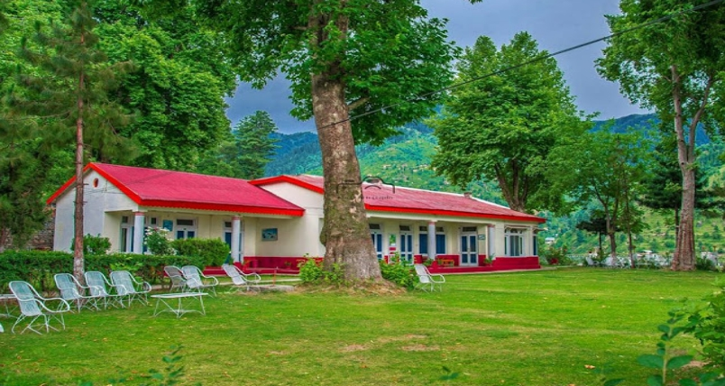

Miandam
Encircled by mountains the picturesque tourist resort of Miandam is at a distance of about 57 km from Saidu Sharif Surrounding mountains during the summer do not allow the gun to cast its shadows on this attractive resort making it the coolest place in the area. A PTDC motel, few hotels and official guest houses keep this beautiful place alive in summer seasons. It provides a refreshing view of large forests, fruit orchards and flowing streams
